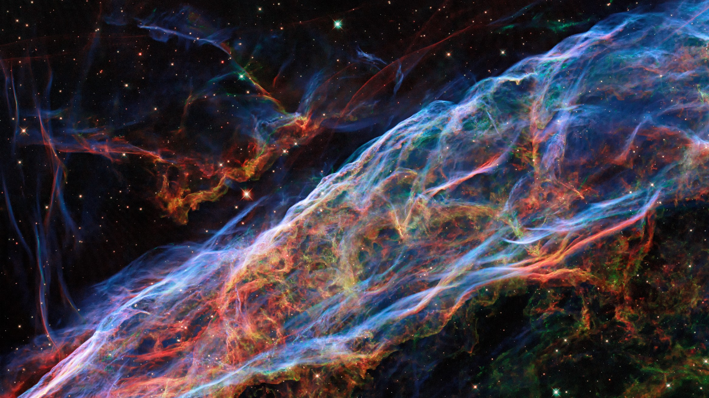
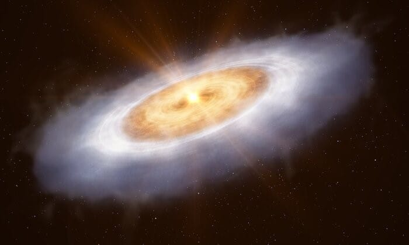
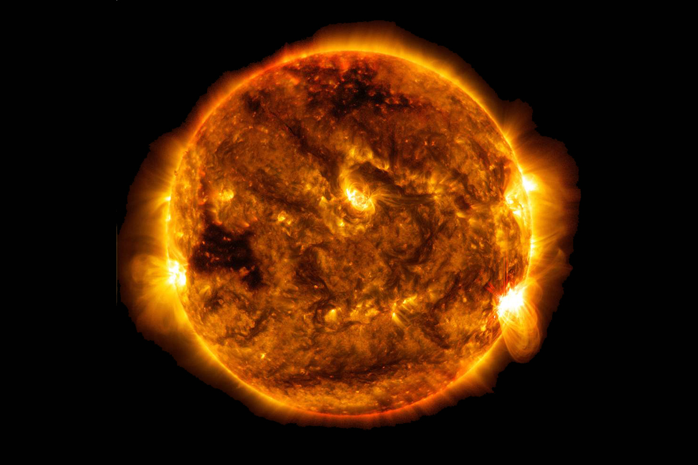
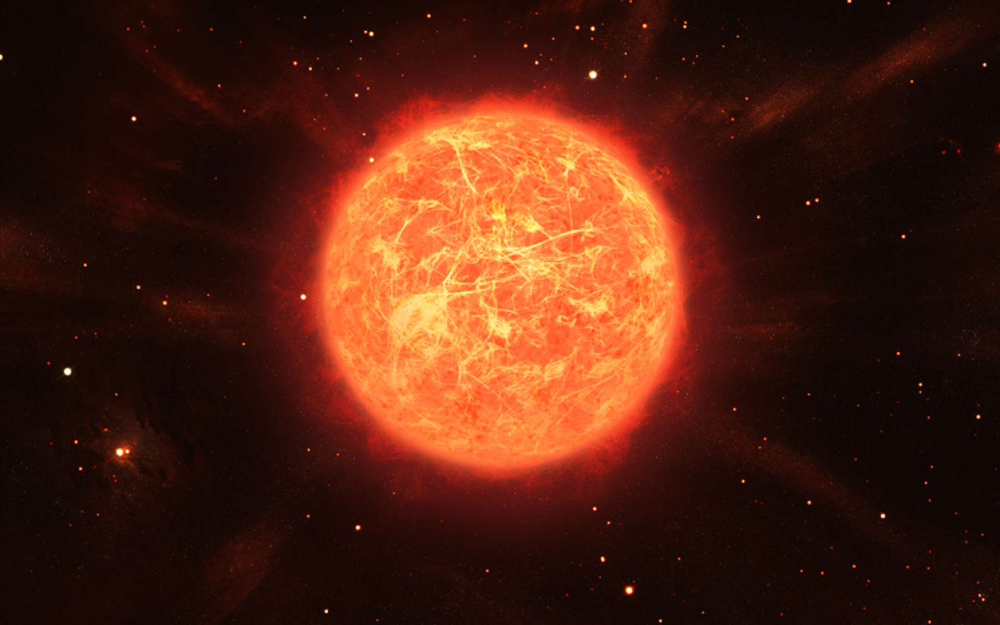
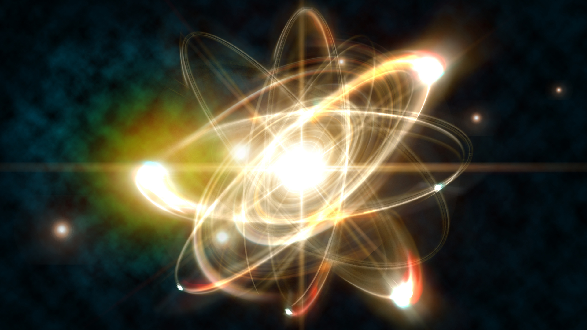
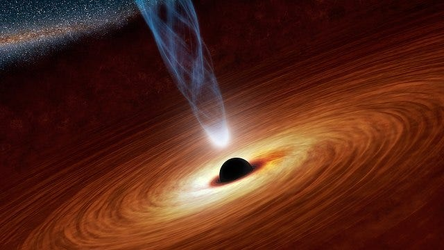
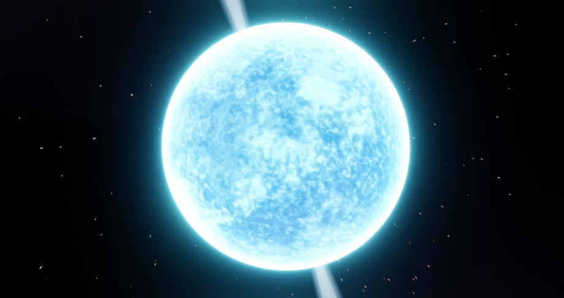
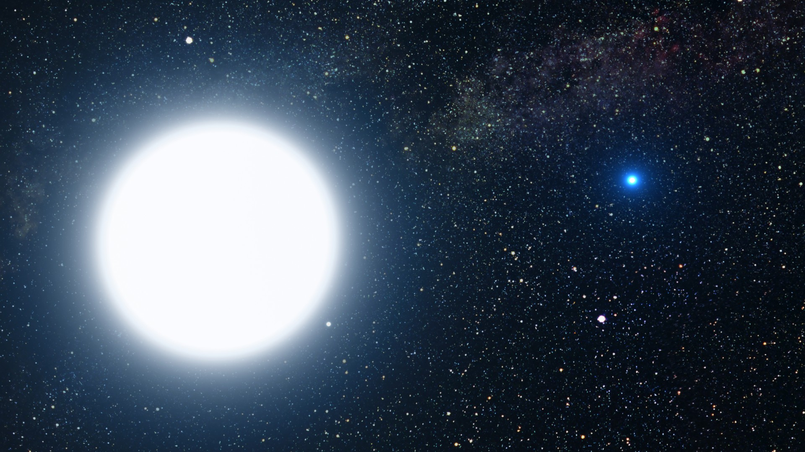
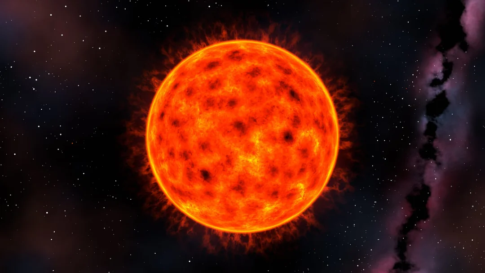

The Life Cycle of Stars
Introduction
Stars are perhaps the most amazing things you can see in space. They seem beautiful, but what do you think about what they are? How do stars form? I will take you on an intriguing journey through the life cycle of stars.

What Are Stars?
Stars are bodies that radiate light and heat. They consist of hydrogen and helium and have very strong gravity, which allows them to pull other bodies (planets, rocks, etc.) toward them. They are the center of this system. Any solar system has at least one star in the middle, and all of its planets orbit this star.

How Do Stars From?
Stars have five stages to from
- Nebulae
- A streaking comet (not alway)
- Protostars
- Nuclear fusion
- A stable state
Nebulae is a huge cloud of gas and dust, it is cold and monotony
If there is a streaking comet goes through the nebulae, it will increase the temperature extremely high, causing it to become unstable and interactions begin to occur between its materials
After about 1 million years (may increase or decrease), the masses of material resulting from the interactions will coalesce into a single mass until they produce objects known as protostars.
When there is enough pressure and heat, the core of the protostar burns and the process of nuclear fusion begins, which produces enormous energy.
Finally, after a while, when the star reaches a stable stage, it becomes a star
First Stages of Stars Life
- Nebulae (explained previously)
- Protostars (explained previously)
- T-Tauri Phase
- Main Sequence
The stage before the nuclear fusion, in this stage there is not enough energy and heat to start the nuclear fusion.
It is the stage that we consider the body to become a star and it produces a lot of heat and energy.
Final Stages of Stars Life
- Red Giant
- The Fusion of Heavier Elements
When the star runs out of hydrogen, its temperature decreases and then it begins to expand, turning into a red giant.
The core of the star begins to incorporate the carbon resulting from the reactions, and then iron appears. Afterward, the core collapses, leading to the star's death, and one of four states occurs.
What Happens After a Star Dies?
There are 4 probabilities:
- Black hole
- Neutron star
- White dwarf
- Red glow
If the star is massive and has enough mass, it dies in a huge explosion known as a supernovae, and over time it turns into nothing but a black hole.
If the star has less mass, it turns into a neutron star.
If the mass of the star is approximately the same as the mass of the sun, it turns into a white dwarf.
If the star is originally a red dwarf, it will remain a red dwarf and glow red.
Conclusion
I hope you enjoyed reading this article, wait for me with more articles.
References
- What are stars? - BBC Skv at Night Magazine
- How Do Stars Form? A Stellar Journev from Dust to Dazzle I HowStuffWorks
- Life Cvcle of a Star - Seven Main Stages of a Star - Stellar Evolution. Video. and FAQs
- The Life Cvcle of a Star - Stages of a Star and More from Little Passoorts
- What haooens when a star dies?